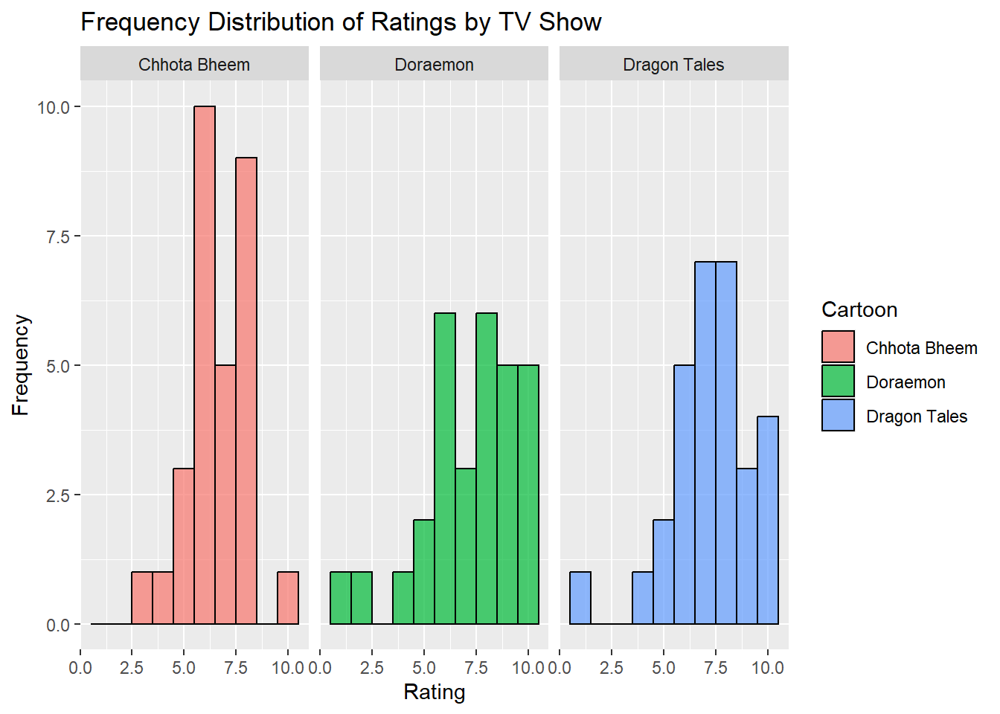
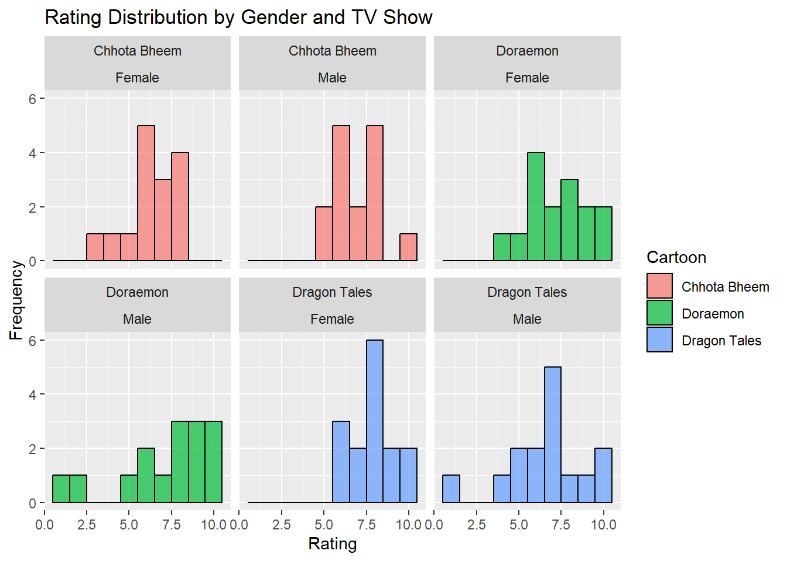
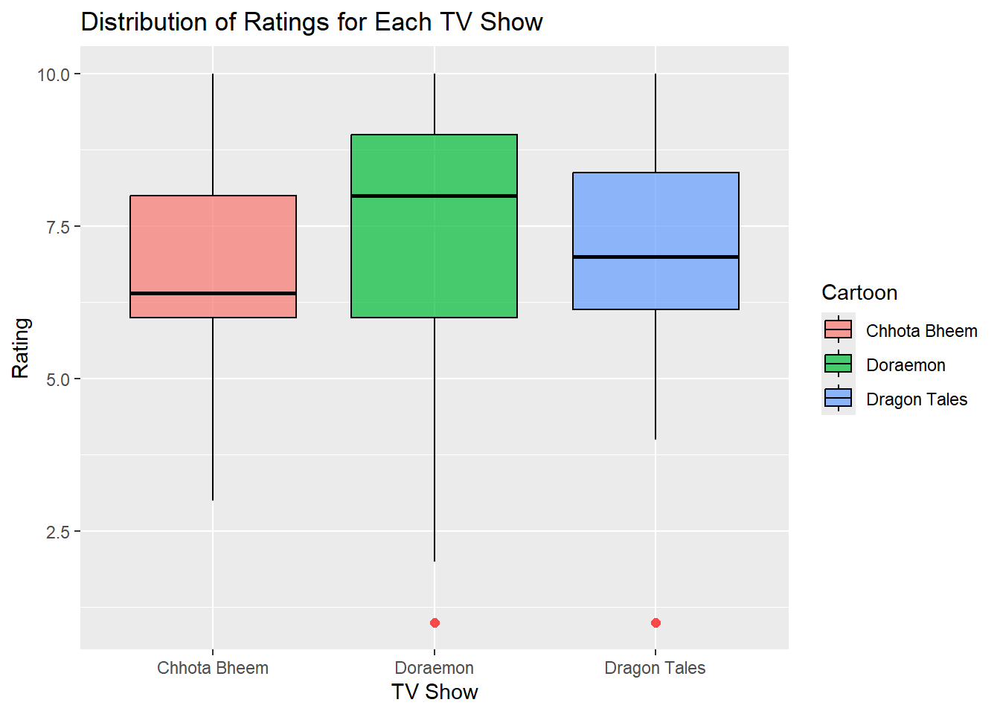
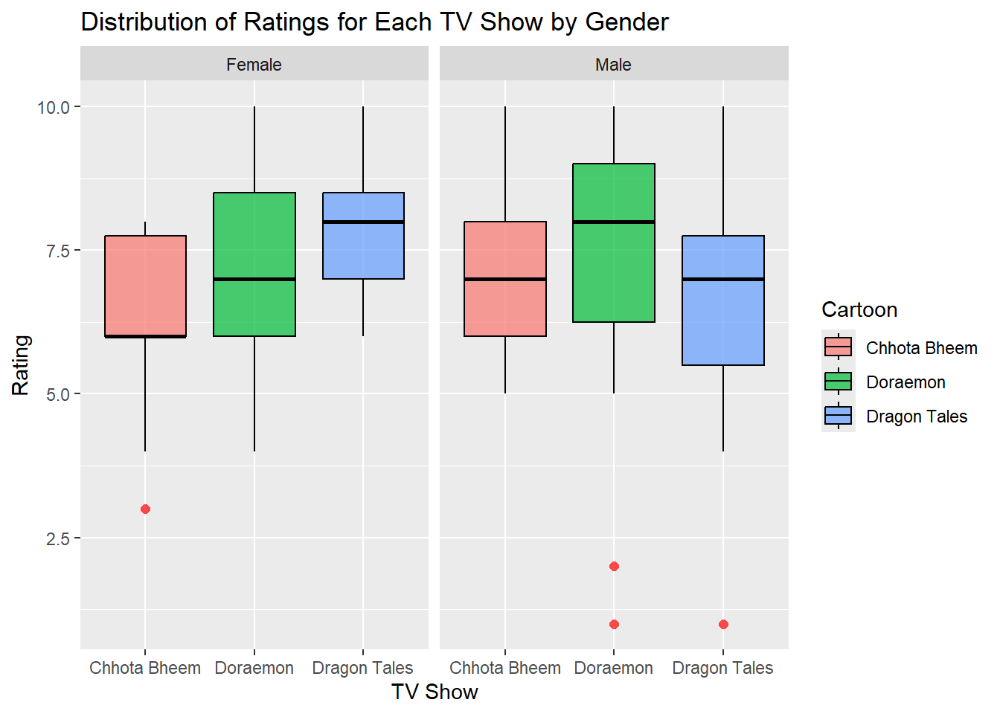
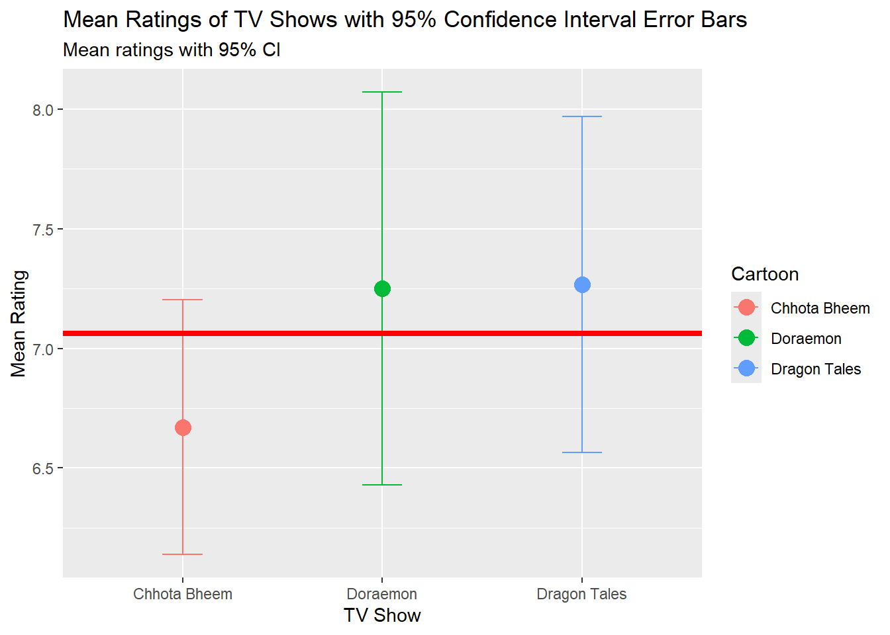
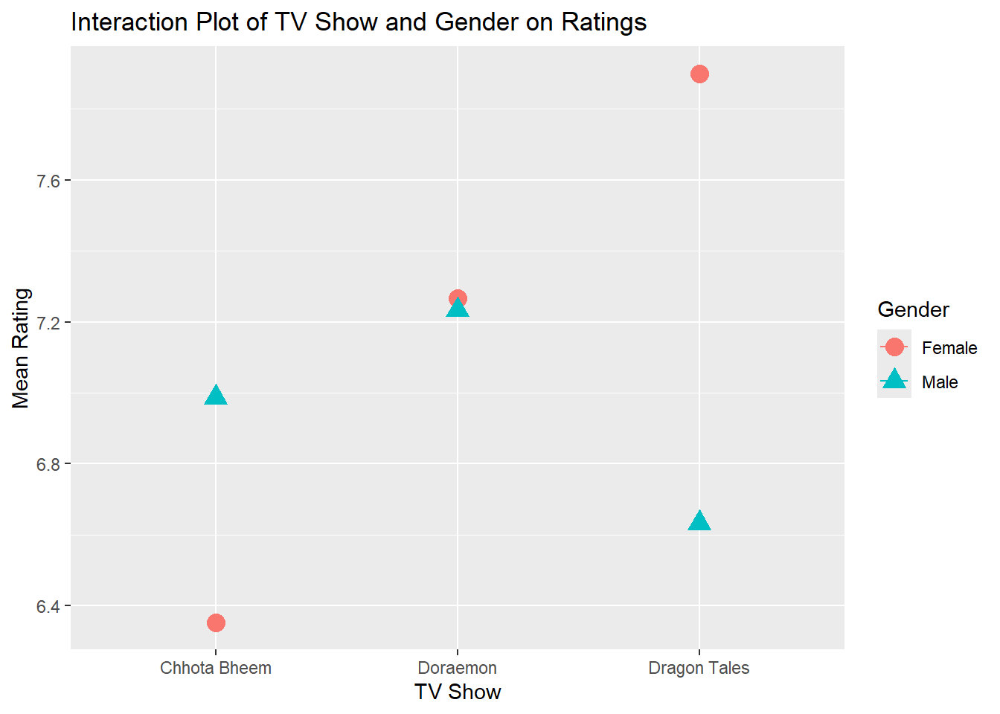
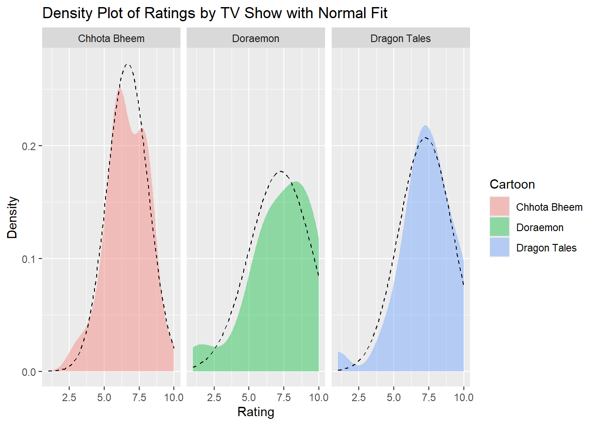

We are investigating whether there is a significant difference in the ratings given to three popular shows: Doraemon, Dragon Tales, and Chhota Bheem, and if gender influences these preferences.
library(tidyverse)
── Attaching core tidyverse packages ──────────────────────── tidyverse 2.0.0 ──
✔ dplyr 1.1.4 ✔ readr 2.1.5
✔ forcats 1.0.0 ✔ stringr 1.5.1
✔ ggplot2 3.5.1 ✔ tibble 3.2.1
✔ lubridate 1.9.3 ✔ tidyr 1.3.1
✔ purrr 1.0.2
── Conflicts ────────────────────────────────────────── tidyverse_conflicts() ──
✖ dplyr::filter() masks stats::filter()
✖ dplyr::lag() masks stats::lag()
ℹ Use the conflicted package (<http://conflicted.r-lib.org/>) to force all conflicts to become errors
library(ggformula)
Loading required package: scales
Attaching package: 'scales'
The following object is masked from 'package:purrr':
discard
The following object is masked from 'package:readr':
col_factor
Loading required package: ggridges
New to ggformula? Try the tutorials:
learnr::run_tutorial("introduction", package = "ggformula")
learnr::run_tutorial("refining", package = "ggformula")
library(mosaic)
Registered S3 method overwritten by 'mosaic':
method from
fortify.SpatialPolygonsDataFrame ggplot2
The 'mosaic' package masks several functions from core packages in order to add
additional features. The original behavior of these functions should not be affected by this.
Attaching package: 'mosaic'
The following object is masked from 'package:Matrix':
mean
The following object is masked from 'package:scales':
rescale
The following objects are masked from 'package:dplyr':
count, do, tally
The following object is masked from 'package:purrr':
cross
The following object is masked from 'package:ggplot2':
stat
The following objects are masked from 'package:stats':
binom.test, cor, cor.test, cov, fivenum, IQR, median, prop.test,
quantile, sd, t.test, var
The following objects are masked from 'package:base':
max, mean, min, prod, range, sample, sum
library(broom)library(infer)
Attaching package: 'infer'
The following objects are masked from 'package:mosaic':
prop_test, t_test
Attaching package: 'supernova'
The following object is masked from 'package:scales':
number
library(dplyr)library(skimr)
Attaching package: 'skimr'
The following object is masked from 'package:mosaic':
n_missing
library(crosstable)
Attaching package: 'crosstable'
The following object is masked from 'package:purrr':
compact
Research Experiment to Investigate the Differences in Popularity of Doraemon, Dragon Tales, and Chhota Bheem Among Students
Objective: The purpose of this research experiment is to investigate whether there is a significant difference in the ratings given to three popular shows: Doraemon, Dragon Tales, and Chhota Bheem, and to examine if gender influences these preferences. By collecting and analyzing rating data from students, we aim to explore if there are differences in popularity across shows, and whether male and female students rate these shows differently.
Hypotheses:
Primary Hypothesis: There is a significant difference in the ratings given to Doraemon, Dragon Tales, and Chhota Bheem.
Additional Hypotheses:
Doraemon tends to receive higher ratings on average compared to Dragon Tales and Chhota Bheem, indicating a stronger preference for this show.
There is a significant interaction between gender and show preferences, suggesting that male and female students may rate these shows differently.
Experiment Design:
Data Collection:
Sample: The dataset consists of ratings from 90 students at MAHE Bengaluru, with 30 participants rating each show, totaling 90 responses. Each participant rated only one assigned show, ensuring 30 ratings per show with an equal distribution of male and female participants.
Data Sources: Participants were randomly selected by tossing a coin, and the ratings were recorded in an Excel sheet by the experiment conductors. Each participant rated the show they were assigned on a scale from 1 to 10, with 10 being the highest score.
Variables Measured:
Target Variable: The rating given by each participant to the assigned show.
Predictor Variables: Show (Doraemon, Dragon Tales, Chhota Bheem) and Gender (Male, Female).
Sampling:
Time Period: The experiment was conducted over a period of 1.5 hours on October 24th, 2024.
Participant Selection Criteria: 90 participants were randomly assigned to rate one of the three shows, with balanced representation by gender (15 males and 15 females per show).
Analysis Plan:
Data Cleaning and Transformation:The data was checked for accuracy in the Excel sheet to ensure that each participant’s rating, show assignment, and gender were properly recorded, with no missing or erroneous entries.
Exploratory Data Analysis (EDA):Visualizations such as histograms, box plots, and scatter plots will be used to compare rating distributions across the three shows and examine any differences by gender. This will help identify patterns or preferences among the participants.
Statistical Tests:
Shapiro-Wilk Test for Normality:The Shapiro-Wilk test will be used to check if the rating data follows a normal distribution for each show. If the data significantly deviates from normality (p-value < 0.05), it suggests the use of non-parametric tests.
Variance Test (F-Test):A variance test will be conducted to determine if the variances in ratings are equal between the shows. This test will check the assumption of homogeneity of variances, which is required for the two-sample t-test and ANOVA. If the p-value is small (p-value < 0.05), it indicates unequal variances.
One-Way ANOVA: A one-way ANOVA will be conducted to compare the average ratings across the three shows. This will help determine if there is a statistically significant difference in ratings between the shows.
Two-Way ANOVA:A two-way ANOVA will be conducted to examine the effects of both show and gender on the average ratings. This will help determine if there are main effects of show or gender, and if there is an interaction effect between the two factors.
Pairwise Comparisons:If the two-way ANOVA is significant, post-hoc pairwise comparisons using Bonferroni correction will be conducted to identify specific differences in ratings between pairs of shows for each gender.
Wilcoxon Rank-Sum Test:If the normality assumption is not met, a Wilcoxon rank-sum test will be conducted to compare the ratings between shows and between genders. This will assess whether male and female students rate one show higher or lower compared to the others.
Kruskal-Wallis Test (Non-Parametric Alternative to ANOVA): If assumptions for ANOVA are violated, this test can assess differences in ratings across the three shows.
Tukey Test:If ANOVA results are significant, a Tukey Honest Significant Difference (HSD) test will be used to further explore the pairwise differences in the mean ratings between the shows for each gender. This test will provide specific pairwise comparisons to determine which shows differ significantly.
Permutation Test:A permutation test will be conducted to assess the likelihood of the observed differences in ratings across the three shows occurring by chance, providing a non-parametric alternative to the one-way ANOVA.
Descriptive Statistics:Descriptive measures such as mean, median, and standard deviation will be calculated for each show and gender group to summarize rating performance. These statistics will help provide a clear overview of the central tendencies and variability within each group.
Limitations:
Sample Size: With 30 participants rating each show and equal representation of male and female students, the results may not be generalizable to the entire student population or other demographic groups. A more extensive sample would provide greater reliability and external validity.
Contextual Factors: The study did not account for other factors that might influence ratings, such as participants’ prior exposure to the shows or personal preferences in show genres, which could have an effect on the ratings.
Outcome:
The analysis will reveal whether significant differences in show ratings exist among students at MAHE Bengaluru, and whether these differences are influenced by gender. If the hypotheses hold, it would suggest that one show (e.g., Doraemon) tends to be more popular among students, with potential gender-based differences in preferences. These findings will provide insights into the viewing preferences of the target audience within this academic context.
Dataset - TV Shows
shows <-read_csv("../../data/tvshows.csv")
Rows: 90 Columns: 4
── Column specification ────────────────────────────────────────────────────────
Delimiter: ","
chr (3): Participant ID, Gender, Cartoon
dbl (1): Rating
ℹ Use `spec()` to retrieve the full column specification for this data.
ℹ Specify the column types or set `show_col_types = FALSE` to quiet this message.
shows
# A tibble: 90 × 4
`Participant ID` Gender Cartoon Rating
<chr> <chr> <chr> <dbl>
1 P1 Male Chhota Bheem 8.5
2 P2 Male Chhota Bheem 6
3 P3 Male Chhota Bheem 8
4 P4 Male Chhota Bheem 7
5 P5 Male Chhota Bheem 8
6 P6 Male Chhota Bheem 10
7 P7 Male Chhota Bheem 5
8 P8 Male Chhota Bheem 7.8
9 P9 Male Chhota Bheem 8.5
10 P10 Male Chhota Bheem 5
# ℹ 80 more rows
The dataset consists of ratings given by 90 participants, each providing a rating for one of three cartoons: Chhota Bheem, Doraemon, and Dragon Tales. The dataset includes four columns: “Participant ID,” “Gender,” “Cartoon,” and “Rating.” Each participant rated one cartoon on a scale from 1 to 10, with 10 being the highest. The dataset appears balanced in terms of gender distribution, with both male and female participants represented.
This overview provides a quick look at the structure and type of each column in the dataset, confirming the categorical and continuous data types suitable for further analysis.
Inspect - TV Shows
inspect(shows_modified)
categorical variables:
name class levels n missing
1 Participant ID character 90 90 0
2 Gender factor 2 90 0
3 Cartoon factor 3 90 0
distribution
1 P1 (1.1%), P10 (1.1%), P11 (1.1%) ...
2 Female (50%), Male (50%)
3 Chhota Bheem (33.3%), Doraemon (33.3%) ...
quantitative variables:
name class min Q1 median Q3 max mean sd n missing
1 Rating numeric 1 6 7 8 10 7.062222 1.939627 90 0
The dataset has four columns: Participant ID, Gender, Cartoon, and Rating. Both Gender (Male, Female) and Cartoon (three shows) are categorical factors. The Rating column is numerical, with values ranging from 1 to 10. Summary statistics for ratings show a mean of approximately 7.06 and a standard deviation of around 1.94, with quartiles at 6 (Q1), 7 (median), and 8 (Q3). There are no missing values in the dataset.
Skim - TV Shows
skim(shows_modified)
Data summary
Name
shows_modified
Number of rows
90
Number of columns
4
_______________________
Column type frequency:
character
1
factor
2
numeric
1
________________________
Group variables
None
Variable type: character
skim_variable
n_missing
complete_rate
min
max
empty
n_unique
whitespace
Participant ID
0
1
2
3
0
90
0
Variable type: factor
skim_variable
n_missing
complete_rate
ordered
n_unique
top_counts
Gender
0
1
FALSE
2
Fem: 45, Mal: 45
Cartoon
0
1
FALSE
3
Chh: 30, Dor: 30, Dra: 30
Variable type: numeric
skim_variable
n_missing
complete_rate
mean
sd
p0
p25
p50
p75
p100
hist
Rating
0
1
7.06
1.94
1
6
7
8
10
▁▁▆▇▅
Each participant is identified by a unique Participant ID (character variable) and is categorized by Gender (factor with 2 levels: Male and Female) and Cartoon (factor with 3 levels representing the three shows). The Rating variable, a numeric value, represents the score given to each show on a scale of 1 to 10.
The summary statistics for Rating show a mean score of approximately 7.06, with a standard deviation of 1.94, indicating moderate variability in ratings across participants. The rating scores range from a minimum of 1 to a maximum of 10, with quartiles (25th, 50th, and 75th percentiles) at 6, 7, and 8, respectively, reflecting a slightly right-skewed distribution. There are no missing values, and each participant rated only one show, ensuring balanced data across gender and show categories.
Data Dictionary
Quantitative Data:
Rating (dbl): The rating given by each participant for the TV show they viewed, represented as a numeric value ranging from 1 to 10, with 10 being the highest rating.
Qualitative Data:
Participant ID (chr): The unique identifier assigned to each participant in the dataset.
Gender (fct): The gender of the participant, categorized as either Male or Female.
Cartoon (fct): The TV show that each participant rated, categorized as Chhota Bheem, Doraemon, or Dragon Tales.
The group summaries for the TV shows dataset provide insights into the average ratings given to each show by gender, along with the standard deviation, which indicates the variability of these ratings. For “Chhota Bheem,” females rated it with a mean of 6.35 and a standard deviation of 1.51, while males rated it slightly higher, with a mean of 6.99 and a standard deviation of 1.44. “Doraemon” received a similar pattern, with females giving it a mean rating of 7.27 (SD = 1.79) and males giving a mean rating of 7.23 (SD = 2.77), showing higher variability among male ratings. “Dragon Tales” saw the highest female rating average of 7.9 with the lowest variability (SD = 1.26), whereas males rated it lower on average at 6.63, with a standard deviation of 2.35. Each group contains 15 participants, ensuring balanced representation across genders for each show. This summary highlights gender-specific tendencies in show ratings, with notable differences particularly for “Dragon Tales.”
Histogram - Frequency Distribution of Ratings by TV Show
gf_histogram(~ Rating | Cartoon, data = shows_modified, binwidth =1, fill =~ Cartoon, color ="black", alpha =0.7) %>%gf_labs(title ="Frequency Distribution of Ratings by TV Show",x ="Rating",y ="Frequency" )

The histogram displays the frequency distribution of ratings for each of the three TV shows. For Chhota Bheem, ratings are mostly concentrated between 5 and 8, indicating a relatively positive response, with the majority of ratings around 7. Doraemon has a broader distribution, with ratings spread across a wider range, but with a noticeable cluster around 7 as well. Dragon Tales also shows a similar pattern to Chhota Bheem, with ratings largely grouped around the higher end of the scale (7-10). Each show demonstrates a distinct rating pattern, reflecting the variation in audience reception across the different cartoons.
Histogram - Rating Distribution by Gender and TV Show
gf_histogram(~ Rating,data = shows_modified,binwidth =1,fill =~ Cartoon,color ="black",alpha =0.7) %>%gf_facet_wrap(~ Cartoon + Gender, nrow =2) %>%gf_labs(title ="Rating Distribution by Gender and TV Show",x ="Rating",y ="Frequency" )

The histogram displays the distribution of ratings for each TV show divided by gender (male and female). Each facet represents a unique combination of show and gender, showing the frequency of ratings across a scale from 2.5 to 10. The plot reveals certain patterns, such as a concentration of higher ratings for Dragon Tales among females and a more spread-out distribution of ratings for Doraemon, especially among males. Chhota Bheem has similar rating distributions for both genders, though slight differences can be observed.
Box Plot - Distribution of Ratings for Each TV Show
gf_boxplot( Rating ~ Cartoon,data = shows_modified,fill =~ Cartoon,color ="black",outlier.color ="red",outlier.shape =16,outlier.size =2,alpha =0.7) %>%gf_labs(title ="Distribution of Ratings for Each TV Show",x ="TV Show",y ="Rating" )

In this plot, Doraemon shows an outlier below its lower whisker, suggesting a notably low rating for that show by one participant. Chhota Bheem and Dragon Tales display a wider spread of ratings, with the medians differing slightly between shows.
Boxplot - Distribution of Ratings for Each TV Show by Gender
gf_boxplot( Rating ~ Cartoon | Gender,data = shows_modified,fill =~ Cartoon,color ="black",outlier.color ="red",outlier.shape =16,outlier.size =2,alpha =0.7) %>%gf_labs(title ="Distribution of Ratings for Each TV Show by Gender",x ="TV Show",y ="Rating" )

The box plot displays the distribution of ratings for each TV show, separated by gender. For each show (Chhota Bheem, Doraemon, and Dragon Tales), the ratings are visualized for both female and male participants, allowing a direct comparison of medians, interquartile ranges, and the spread of data points. Outliers are represented as individual points below the lower whiskers. The plot reveals that the median rating for Chhota Bheem is slightly higher among males than females, while for Dragon Tales, females appear to give slightly higher ratings than males. Doraemon shows a relatively consistent distribution across genders, though with some outliers among male ratings.
Errorbar Plot - Mean Ratings of TV Shows with 95% Confidence Interval Error Bars
shows_summary <- shows_modified %>%group_by(Cartoon) %>%summarise(mean_rating =mean(Rating, na.rm =TRUE),sd_rating =sd(Rating, na.rm =TRUE),n =n(),se = sd_rating /sqrt(n), ci_95 =1.96* se )gf_point( mean_rating ~ Cartoon, data = shows_summary, size =4, color =~ Cartoon ) %>%gf_errorbar(ymin =~ mean_rating - ci_95, ymax =~ mean_rating + ci_95, width =0.2 ) %>%gf_hline(yintercept =7.062, color ="red", linewidth =1.5 ) %>%gf_labs(title ="Mean Ratings of TV Shows with 95% Confidence Interval Error Bars",subtitle ="Mean ratings with 95% CI",x ="TV Show",y ="Mean Rating" )

The bar plot with error bars displays the mean ratings of three TV shows, each represented by a point with accompanying error bars indicating the 95% confidence intervals. The horizontal red line serves as a reference, placed at a mean rating of 7,062, allowing for easy comparison of each show’s rating relative to this average. Doraemon exhibits the widest confidence interval, reflecting greater variability in ratings, while Chhota Bheem shows a narrower interval, suggesting more consistency in its ratings. Dragon Tales lies closest to the reference mean.
`summarise()` has grouped output by 'Cartoon'. You can override using the
`.groups` argument.
gf_line( mean_rating ~ Cartoon,color =~ Gender,data = shows_summary_gender) %>%gf_point( mean_rating ~ Cartoon,color =~ Gender,shape =~ Gender,size =4 ) %>%gf_labs(title ="Interaction Plot of TV Show and Gender on Ratings",x ="TV Show",y ="Mean Rating" )
`geom_line()`: Each group consists of only one observation.
ℹ Do you need to adjust the group aesthetic?

The interaction plot displays the mean ratings for each TV show, separated by gender, allowing us to observe any interaction effects between TV show and gender on ratings. In this plot, “Chhota Bheem,” “Doraemon,” and “Dragon Tales” are plotted along the x-axis, while the mean rating is represented on the y-axis. Different shapes and colors denote male and female participants, respectively, highlighting their individual ratings for each show. This visualization makes it clear if there are any gender-specific trends or if both genders rate the shows similarly. For example, in this plot, we can see that females tend to rate “Dragon Tales” higher on average compared to males, while males seem to rate “Chhota Bheem” lower than females.
Density Plot of Ratings by TV Show with Normal Fit
gf_density(~ Rating | Cartoon, data = shows_modified, fill =~ Cartoon, alpha =0.4) %>%gf_fitdistr(~ Rating | Cartoon, data = shows_modified, ddist ="normal", color ="black", linetype ="dashed") %>%gf_labs(title ="Density Plot of Ratings by TV Show with Normal Fit",x ="Rating",y ="Density" )

The density plot visualizes the distribution of ratings for each TV show with an overlaid normal distribution (dashed line) for comparison. The plot reveals that ratings for Chhota Bheem are skewed left, centered around a lower rating range, indicating that the ratings are generally lower for this show. Doraemon shows a more uniform distribution, although slightly right-skewed, suggesting a tendency towards higher ratings. Dragon Tales has a distinct peak in the middle-to-upper range of ratings, also slightly right-skewed, indicating that it generally received higher ratings. The normal distribution overlay highlights deviations from normality, with all shows showing some skewness, particularly Chhota Bheem and Dragon Tales, suggesting that these distributions are not entirely normal.
The crosstable for the shows dataset displays the distribution of participants across the variables Cartoon and Gender. Each cartoon, Chhota Bheem, Doraemon, and Dragon Tales, has exactly 30 participants, representing 33.33% of the total sample. Additionally, the dataset has a balanced gender distribution, with 45 male and 45 female participants, each comprising 50% of the total sample. This even split across both cartoons and gender ensures that any comparisons made in the analysis can be interpreted without concern for imbalance in the sample’s composition.
Shapiro-Wilk normality test
data: shows_modified$Rating[shows_modified$Cartoon == "Chhota Bheem"]
W = 0.9515, p-value = 0.1854
shapiro_test_doraemon
Shapiro-Wilk normality test
data: shows_modified$Rating[shows_modified$Cartoon == "Doraemon"]
W = 0.90877, p-value = 0.01385
shapiro_test_dragontales
Shapiro-Wilk normality test
data: shows_modified$Rating[shows_modified$Cartoon == "Dragon Tales"]
W = 0.9181, p-value = 0.02395
The Shapiro-Wilk normality tests were conducted on the ratings for each TV show—Chhota Bheem, Doraemon, and Dragon Tales.
Chhota Bheem: W = 0.9515, p-value = 0.1854, indicating that the ratings do not significantly deviate from a normal distribution, as the p-value is greater than 0.05.
Doraemon: W = 0.9087, p-value = 0.01385, suggesting a significant deviation from normality, with a p-value below 0.05.
Dragon Tales: W = 0.9181, p-value = 0.02395, also showing a significant deviation from normality.
These results indicate that the ratings for Doraemon and Dragon Tales do not follow a normal distribution, while the ratings for Chhota Bheem appear to be normally distributed.
DescTools::LeveneTest(Rating ~ Cartoon, data = shows_modified)
Levene's Test for Homogeneity of Variance (center = median)
Df F value Pr(>F)
group 2 1.2923 0.2798
87
fligner.test(Rating ~ Cartoon, data = shows_modified)
Fligner-Killeen test of homogeneity of variances
data: Rating by Cartoon
Fligner-Killeen:med chi-squared = 1.8135, df = 2, p-value = 0.4038
The Levene’s Test and Fligner-Killeen Test were performed to assess the homogeneity of variances in ratings across the three TV shows: Chhota Bheem, Doraemon, and Dragon Tales. Variance calculations show differing values for each show, with Chhota Bheem at 2.21, Doraemon at 5.25, and Dragon Tales at 3.84. The Levene’s Test produced an F-value of 1.2923 with a p-value of 0.2798, while the Fligner-Killeen Test yielded a chi-squared value of 1.8135 with a p-value of 0.4038. Both tests indicate that the differences in variances are not statistically significant (p > 0.05), suggesting that the assumption of homogeneity of variances holds for the ratings across the three shows.
One - Way ANOVA
anova_result <-aov(Rating ~ Cartoon, data = shows_modified)summary(anova_result)
Df Sum Sq Mean Sq F value Pr(>F)
Cartoon 2 6.9 3.463 0.919 0.403
Residuals 87 327.9 3.769
The results of the one-way ANOVA for the TV Shows dataset indicate that there is no statistically significant difference in the average ratings among the three shows: Chhota Bheem, Doraemon, and Dragon Tales. The F-value is 0.919, and the associated p-value is 0.403, which is greater than the conventional significance level of 0.05. Therefore, we fail to reject the null hypothesis, suggesting that the mean ratings for these shows are not significantly different from one another. This analysis implies that participants rated the three shows similarly on average.
Two - Way ANOVA
anova_result_2way <-aov(Rating ~ Cartoon * Gender, data = shows_modified)summary(anova_result_2way)
Df Sum Sq Mean Sq F value Pr(>F)
Cartoon 2 6.93 3.463 0.930 0.399
Gender 1 1.11 1.111 0.298 0.586
Cartoon:Gender 2 13.94 6.969 1.871 0.160
Residuals 84 312.85 3.724
The results of the two-way ANOVA indicate that neither Cartoon (TV Show) nor Gender individually has a statistically significant effect on the Rating (p-values of 0.399 and 0.586, respectively). Additionally, there is no significant interaction effect between Cartoon and Gender on the ratings, with a p-value of 0.160 for the interaction term. This suggests that neither the type of TV show nor the gender of participants, nor their combination, significantly impacts the ratings given by the participants in this dataset.
The post-hoc analysis with Bonferroni correction was conducted to examine pairwise comparisons of ratings across the three TV shows (Chhota Bheem, Doraemon, and Dragon Tales). This analysis identified the mean differences between each pair of shows, along with their respective confidence intervals and adjusted p-values. The results include:
A comparison between Doraemon and Chhota Bheem with a mean difference of 0.58.
A comparison between Dragon Tales and Chhota Bheem with a mean difference of 0.597.
A comparison between Dragon Tales and Doraemon with a very small difference of 0.017.
The confidence intervals displayed in the plot show the estimated range of each difference with Bonferroni-adjusted significance levels, but none of the intervals exclude zero, indicating that no significant difference was detected among the pairs at the 95% confidence level after adjustment. This suggests that while there are observable mean differences, they are not statistically significant.
The p-value obtained (0.09328) is above the typical threshold of 0.05, indicating that there is no statistically significant difference in the ratings between “Chhota Bheem” and “Doraemon” at a 5% significance level. The test also provides a confidence interval for the rank difference, though it includes zero, reinforcing the lack of a significant difference between these two groups. This analysis allows us to understand that any observed rating differences between these shows are likely due to chance, rather than a true difference in audience ratings.
Wilcoxon Rank-Sum Test - Chhota Bheem vs Dragon Tales
Here, the p-value is approximately 0.0918, which is above the typical significance threshold of 0.05, indicating that the difference in median ratings between “Chhota Bheem” and “Dragon Tales” is not statistically significant at the 5% level. The confidence interval for the difference in ratings spans both positive and negative values, further supporting the conclusion of no significant difference in ratings between these two shows in this test.
This test resulted in a test statistic of 461.5 with a p-value of approximately 0.869. The confidence interval for the difference in median ratings ranges from -0.999 to 1.000. Given the high p-value, there is no statistically significant difference in median ratings between “Doraemon” and “Dragon Tales”, suggesting that viewers rate these two shows similarly on average.
Kruskal-Wallis Test
kruskal_test_result <-kruskal.test(Rating ~ Cartoon, data = shows_modified) %>% broom::tidy()kruskal_test_result
# A tibble: 1 × 4
statistic p.value parameter method
<dbl> <dbl> <int> <chr>
1 3.83 0.148 2 Kruskal-Wallis rank sum test
In learning about the Kruskal-Wallis test, I discovered it as a non-parametric alternative to the One-Way ANOVA, particularly useful when the data does not meet the normality assumption required by ANOVA. This test compares the medians of multiple groups to determine if there are significant differences among them. By ranking the data and assessing the distribution of these ranks across groups, the Kruskal-Wallis test provides insight without relying on normally distributed data.
In applying the test to compare ratings across the three TV shows (Chhota Bheem, Doraemon, and Dragon Tales), I obtained a test statistic of 3.825 with a p-value of approximately 0.148. Since the p-value is greater than the common significance level of 0.05, we do not have sufficient evidence to conclude that there is a statistically significant difference in the ratings among the shows. This suggests that the median ratings across the three shows are not significantly different based on this sample.
Tukey Multiple Comparisons
lm_model <-lm(Rating ~ Cartoon, data = shows_modified)tukey_results <-TukeyHSD(aov(lm_model))print(tukey_results)
The Tukey’s HSD (Honest Significant Difference) test was performed to identify any significant pairwise differences in the ratings among the three TV shows: Doraemon, Chhota Bheem, and Dragon Tales. The results show the difference in mean ratings between each pair of shows along with confidence intervals and adjusted p-values. The p-values for each pairwise comparison are above 0.05, indicating that none of the differences in ratings between the shows are statistically significant at the 95% confidence level. Therefore, we conclude that there is no significant difference in the ratings among Doraemon, Chhota Bheem, and Dragon Tales based on this analysis.
perm_p_value <- null_dist_perm %>%get_p_value(obs_stat = observed_perm$stat, direction ="greater")perm_p_value
# A tibble: 1 × 1
p_value
<dbl>
1 0.405
In this permutation test, the goal was to assess whether the observed differences in ratings among the three TV shows could be attributed to chance. By permuting the ratings data 5,000 times, a null distribution was generated, and the test statistic (F-statistic) for the observed data was compared against this simulated distribution. The visual output shows the null distribution, with the observed test statistic highlighted. The resulting p-value of 0.409 indicates that there is a 40.9% probability that the observed differences in ratings could occur by random chance, suggesting no statistically significant differences in ratings across the shows under the non-parametric assumptions.
Summary of Results for the TV Shows Research Experiment
The research experiment aimed to investigate if there were significant differences in ratings among three popular TV shows: Chhota Bheem, Doraemon, and Dragon Tales, and to examine the effect of gender on these ratings. The following statistical analyses were conducted:
Shapiro-Wilk Test for Normality:
The Shapiro-Wilk test was conducted to check if the ratings for each show followed a normal distribution:
Chhota Bheem: W = 0.9515, p = 0.1854
Doraemon: W = 0.9087, p = 0.01385
Dragon Tales: W = 0.9181, p = 0.02395
With small p-values for Doraemon and Dragon Tales, the ratings for these shows deviated from normality, suggesting that non-parametric tests would be suitable for further analysis.
Variance Test:
Levene’s test and Fligner-Killeen test were used to check if the variances were equal across the three shows:
Levene’s Test: p = 0.2798
Fligner-Killeen Test: p = 0.4038
Both tests indicated no significant difference in variances, so the assumption of equal variances was not violated, allowing for ANOVA to be applied.
One-Way ANOVA:
A one-way ANOVA was conducted to assess differences in mean ratings across the three shows:
F(2, 87) = 0.919, p = 0.403
The ANOVA results showed no statistically significant difference in average ratings across the shows, indicating that there may not be a substantial difference in viewer ratings among the three programs.
Two-Way ANOVA:
A two-way ANOVA was conducted to analyze the combined effects of TV show and gender on ratings:
Main effect of TV Show: F(2, 84) = 0.930, p = 0.399
Main effect of Gender: F(1, 84) = 0.298, p = 0.586
Interaction effect (TV Show * Gender): F(2, 84) = 1.871, p = 0.160
The two-way ANOVA results revealed that neither gender, show, nor their interaction had a statistically significant effect on ratings. This suggests that ratings do not vary meaningfully by gender or show, nor does the combination of show and gender influence ratings significantly.
Wilcoxon Rank-Sum Test:
Pairwise Wilcoxon Rank-Sum tests were performed due to deviations from normality:
Chhota Bheem vs Doraemon: p = 0.09328 (not significant)
Chhota Bheem vs Dragon Tales: p = 0.09184 (not significant)
Doraemon vs Dragon Tales: p = 0.8694 (not significant)
The Wilcoxon tests found no significant differences between any pair of shows, aligning with the results from both ANOVA and Kruskal-Wallis tests.
Kruskal-Wallis Test:
Given the deviations from normality, a Kruskal-Wallis test was performed as a non-parametric alternative to ANOVA:
H(2) = 3.825, p = 0.1477
The Kruskal-Wallis test also indicated no significant differences in ratings across the three shows, consistent with the one-way ANOVA results.
Permutation Test:
A permutation test was conducted to further assess whether the observed differences in ratings across the shows were likely due to chance:
p-value = 0.409
The permutation test confirmed that the differences in ratings could likely occur by random variation, supporting the earlier results.
Conclusion:
The statistical analyses indicate no significant differences in ratings among the three TV shows, and no significant effect of gender on ratings. Both parametric (ANOVA) and non-parametric (Kruskal-Wallis, Wilcoxon Rank-Sum) tests consistently showed that the ratings across the three shows are comparable. The permutation test further validated these findings, confirming that any observed differences are likely due to chance. Consequently, the experiment concludes that ratings do not significantly vary by TV show or gender.